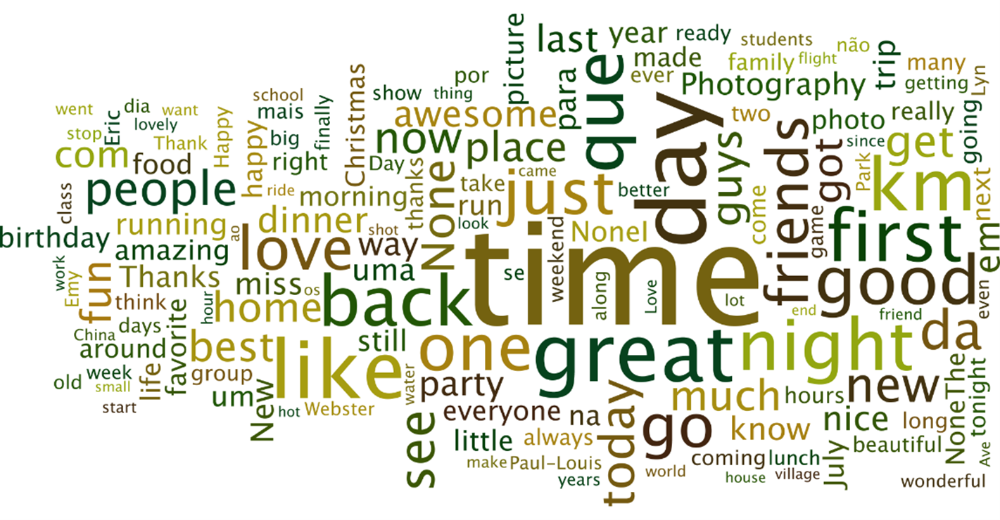

Data Mining

instructor: Xuebin wei
website Ibsocial
Goals of th Course
- Understand basic concepts and technologies of data modeling in Relational Database
Management System and Structured Query Language
- Understand the basic technologies of Unstructured Database, Cloud Database, Data
Warehouse, and Data Lake.
- Be able to collect social media data or other online information from the Internet
shedule
| Date |
Topic |
| week1 |
database |